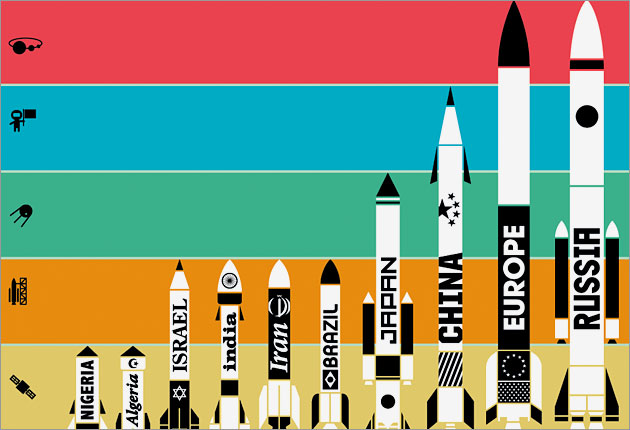

Budget: $93 million (initial funding)
Yes, Nigeria actually has its own space agency. The organization sent up its first satellite,
a weather unit, back in 2003. In May 2007, China assisted in the launch of NigComSat-1,
which helps provide Internet access to rural areas of the country.
